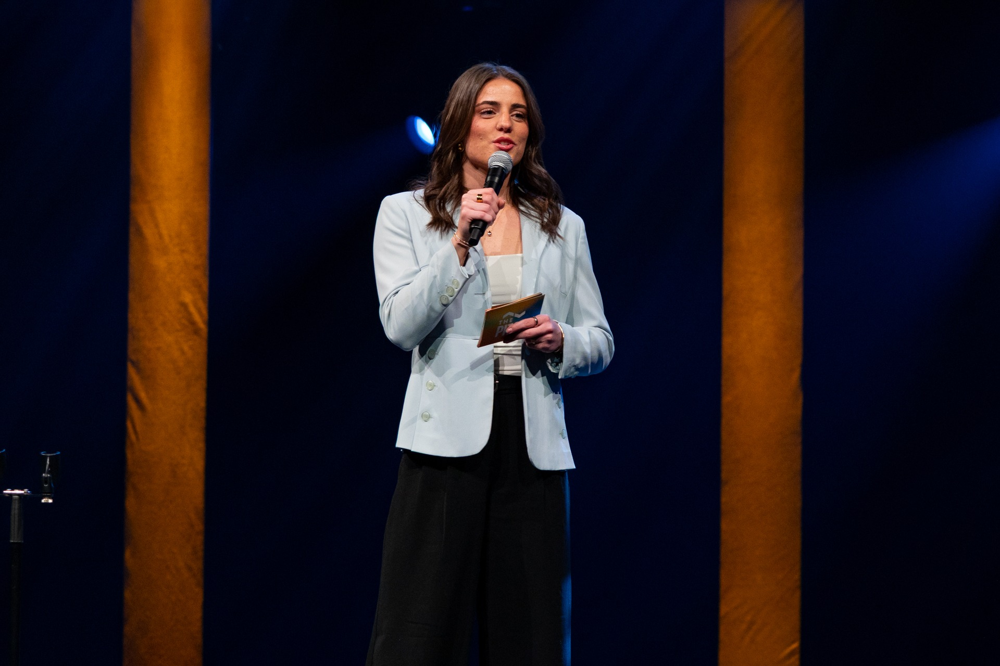

THE BYLINE
Emily Tuttle
My name is Emily Tuttle, and I am currently a senior journalism student at Cedarville University. I have a passion for working in sports journalism and connecting with vast audiences to share more than what they see on a stat line. I hope to leverage my experience as Sports Editor and Editor in Chief of my student newspaper, Cedars, to lead individuals and produce powerful stories. My internship with the Rockford Rivets, a collegiate baseball summer team, taught me the importance of creativity and competitiveness in writing powerful and engaging stories day in and day out.
THE POINT OF VIEW
I am a passionate storyteller with a desire to find creative stories and utilize my competitive edge to share beyond what is read on a stat line. I have strong verbal communication skills to engage with both those that I work alongside and have the ability to lead. My love for sports differentiates me as I display a variety of media skills that I hope to use in sports journalism.
WHY SPORTS
I grew up in a family where watching sports was what we did every night. I always loved watching and arguing with people about my favorite sports teams, and when I realized I could combine my love for sports with my love of writing, sharing stories with people, and collaborating, I realized what a special gift that was. Telling stories that matter to a niche group of fans who would do anything for their team makes me passionate about reaching them with that news, information, or tidbit.
CONTACT
emilytuttle@cedarville.eduLinkedIn ↗